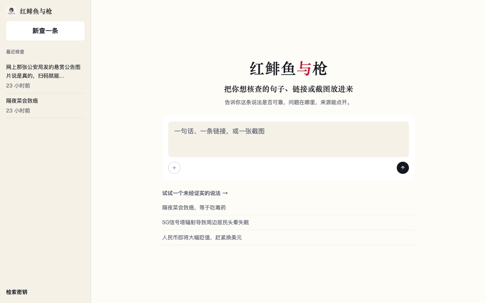
1. 打开首页
我满意左栏历史、红「与」、灰底输入卡、示例。是输入入口，不是空的案件页。
真点了首页示例「隔夜菜会致癌，等于吃毒药」，真立案并等到结论。 过程态另外用设计 fixture 把检索仪器、引用、展开过程走完。 短动图三截：填入、检索中、悬停引用再展开过程。 下面每一步有我的判断。你点「满意 / 不满意」，底部复制发回。
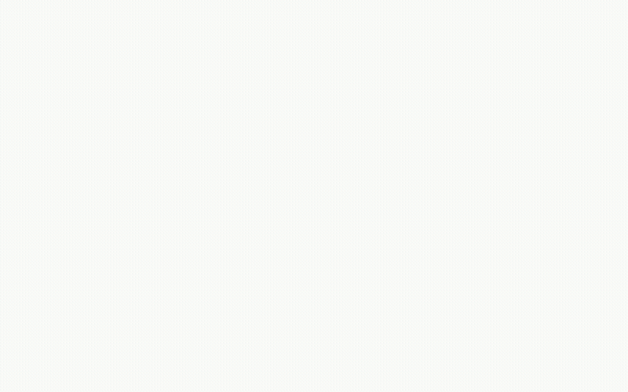

我满意左栏历史、红「与」、灰底输入卡、示例。是输入入口，不是空的案件页。
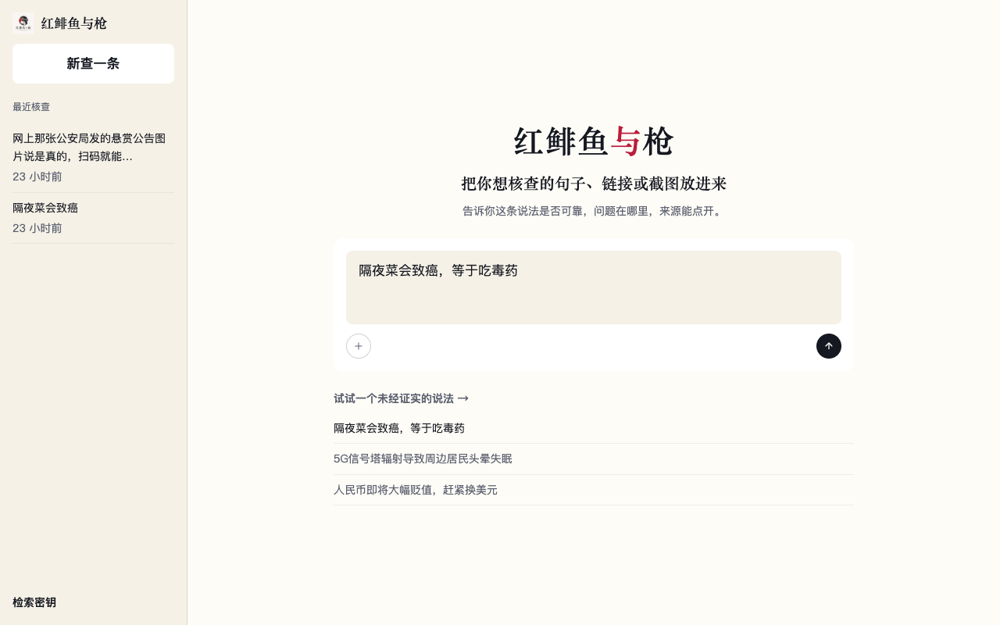
我满意一击填入，发送钮可用。用户不用自己打字。
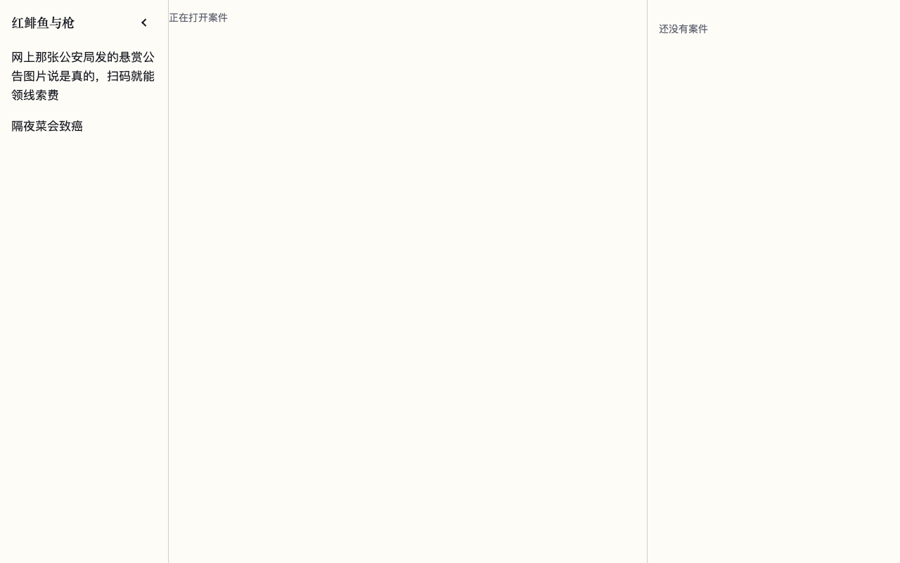
我不满意真立案后先闪一屏「正在打开案件 / 还没有案件」。空壳，原句都还没出现。
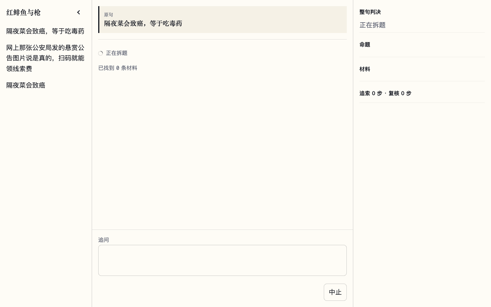
我不满意ring 有了，但写着「已找到 0 条材料」——我们说过不发明 0 占位。右侧「整句判决」还是空的。中间大块空白。
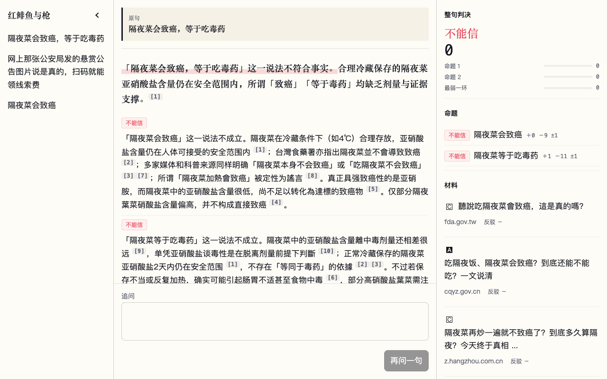
我不满意（结论句本身过关）第一句确实在回答原句，[n] 也在正文里。但右侧「不能信 / 0」抢主秀，说明书不许四字章当脸；分数 0 也像坏了。正文夹了繁体。来源芯片被结论挤到屏外。
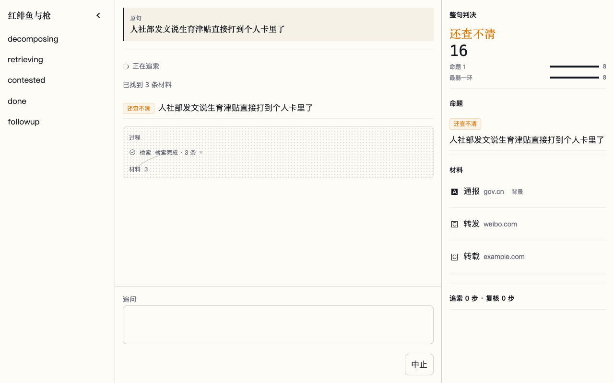
我基本满意ring、过程展开、检索 → 材料，没有 0 条。过程不是英雄。右侧「还查不清」和中间芯片在查的时候就盖章，这一点我不喜欢，但仪器本身安静。
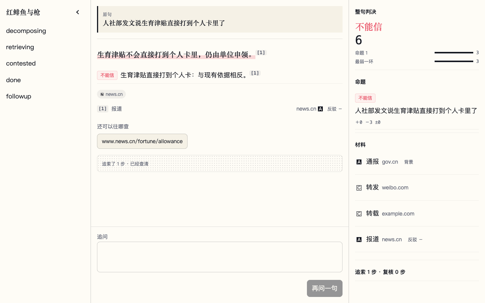
我基本满意原句回答在先，[1]、来源芯片、过程默认收起。芯片和 [1] 报道行有点重复。右侧「不能信 6」仍太大。
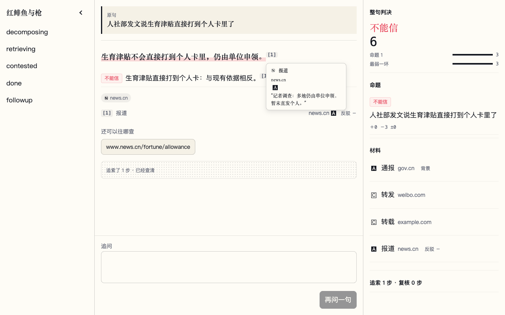
我满意标题、host、层级、引文都在。能点开原文。卡片稍微挡住下一行，可接受。
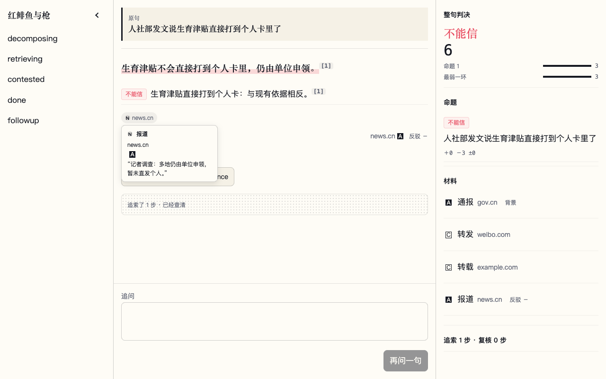
我满意和 [n] 同一套卡片。脚注节奏对。
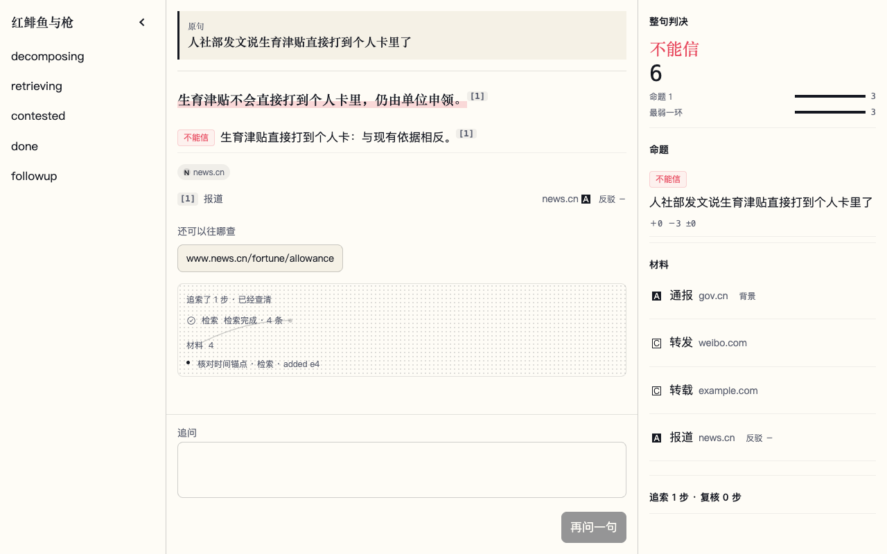
我不满意仪器和竖线步骤在。但步骤写成「added e4」，内部 id 漏到脸上了。
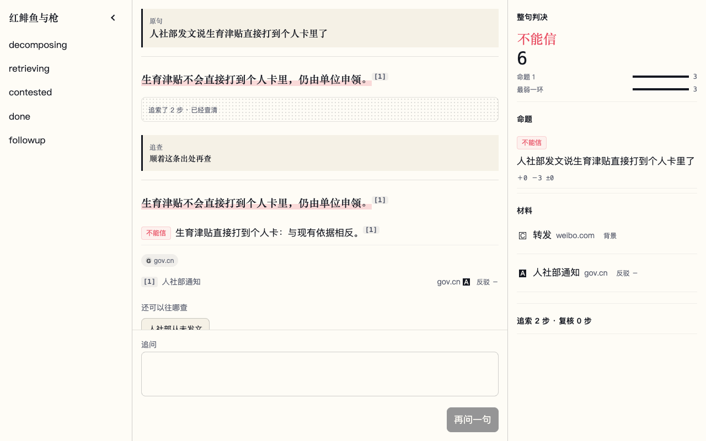
我不满意追查留在同一案，这点对。但过程条挂在旧结论下面，新结论和旧结论叠在一起，像两封信订错了。
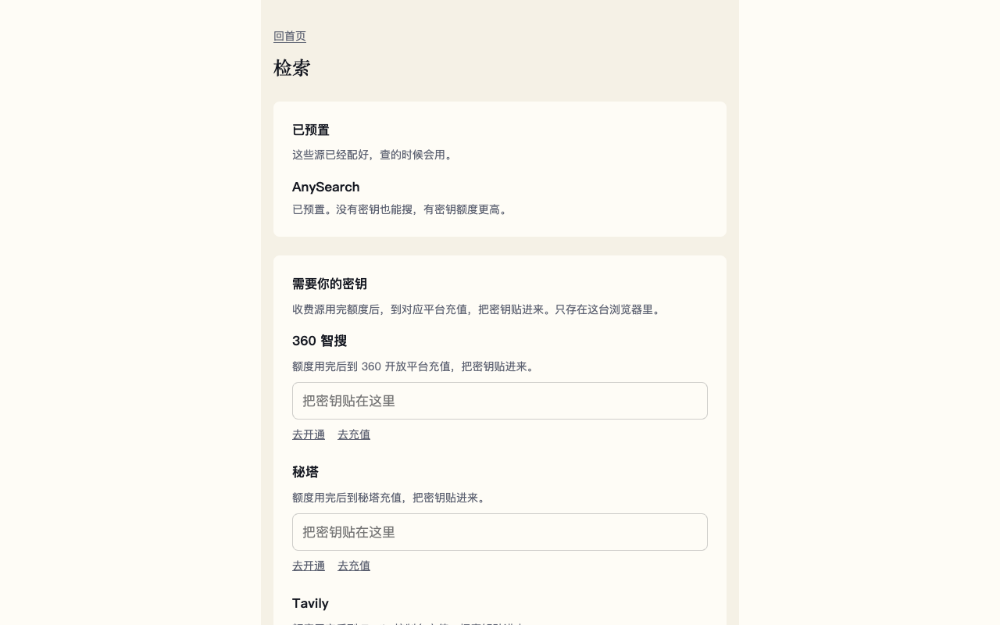
我满意预置 / 自己贴密钥分开，有充值入口。不是这一次的主秀，但路过是干净的。
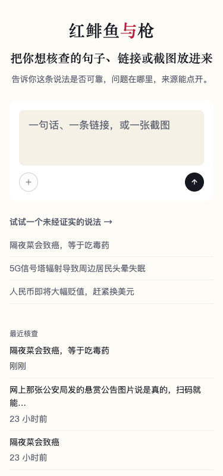
我满意品牌、输入卡、示例、最近核查都在。空输入时发送钮看起来仍像能点，小问题。
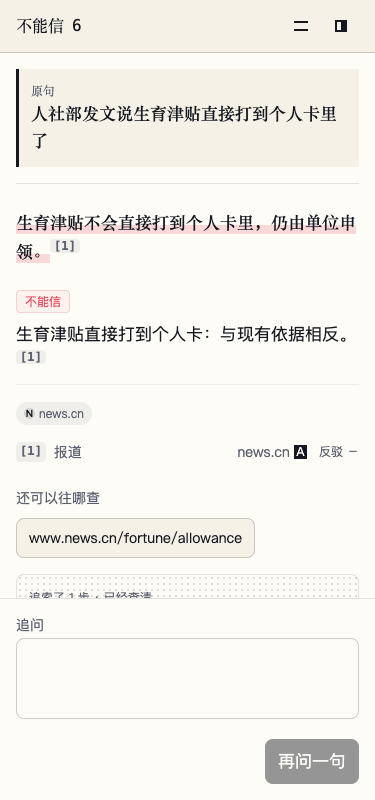
我不满意结论和芯片还在。过程那一行字被切碎。顶栏「不能信 6」继续当章。
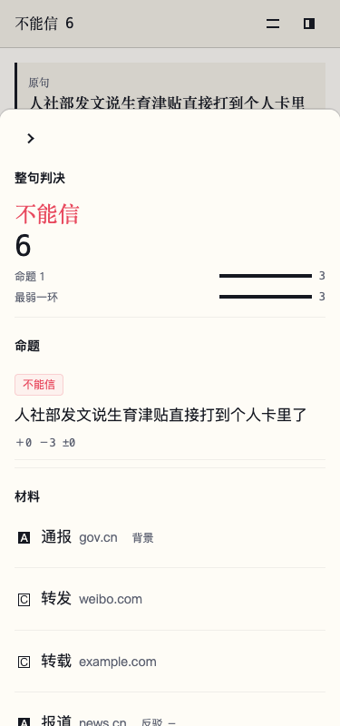
我不满意材料列表能用。整屏最大的字是「不能信 6」，不是对原句的回答。
你的选择（未点的按我的判断）
满意：
不满意：